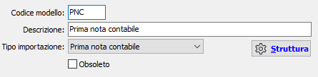
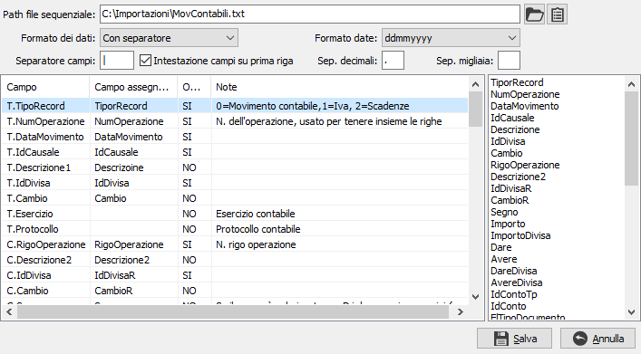
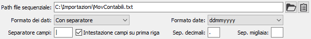
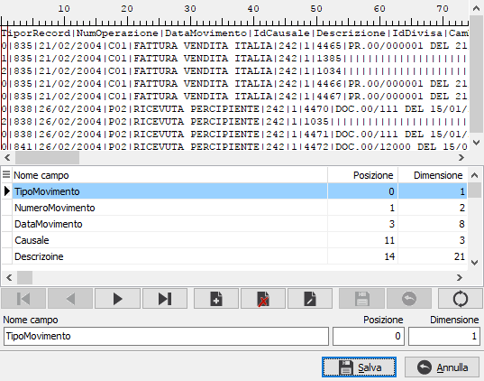

Modelli
La tabella consente di configurare
i modelli necessari all'importazione di dati provenienti da altre applicazioni.
Non sarà consentito inserire più modelli per lo stesso tipo di importazione;
la tabella potrà contenere al massimo 6 codici, uno per ogni tipologia
di importazione effettuabile. La finestra visualizza i dati identificativi
del modello e tramite il pulsante Struttura consente la visualizzazione
e la concreta configurazione dei parametri necessari all'import.
Sono attivi i tasti Stampa
ed Anteprima sulla toolbar principale per effettuare la stampa dei dati
presenti.

CODICE:
codice alfanumerico di tre caratteri che identifica il modello. Sul campo
sono attive le funzioni di ricerca (F9) sulla tabella stessa.
DESCRIZIONE:
campo alfanumerico di 50 caratteri per inserire la descrizione del modello.
TIPO
IMPORT: definisce la tipologia di import per il modello corrente, valori
possibili:
Il pulsante Struttura consente di visualizzare,
se la tabella non è in inserimento o modifica, oppure manutenere i dati
relativi alla configurazione effettiva del modello di importazione. La
colorazione blu del testo sul pulsante indica la presenza di dati. Alla
pressione del pulsante si apre la seguente finestra:

La sezione superiore della finestra contiene i dati relativi al file
di importazione ed alla sua composizione ed in relazione al 'Formato dei
dati' ('Lunghezza fissa' o 'Con separatore') richiede informazioni diverse.

La sezione sottostante contiene a sinistra i campi previsti per il tipo
di importazione selezionato, in base al file di modello preimpostato per
l'importazione specifica; è presente il nome del campo principale, il
nome del campo associato, l'indicazione di campo obbligatorio, le eventuali
informazioni di posizione e dimensione del campo associato ed eventuali
note di utilizzo. Nella parte di destra è visualizzato l'elenco dei campi
presenti e definiti nel file di importazione. E' sufficiente trascinare
un campo dall'elenco di destra nell'elenco campi di sinistra, in corrispondenza
del campo da associare, per effettuare l'associazione del campo stesso.
I campi definiti come obbligatori devono essere tutti associati.
PATH FILE SEQUENZIALE:nome
e percorso del file che contiene i dati da importare.
FORMATO DEI DATI:
definisce il formato dei dati contenuti nel file di import, valori possibili:
con separatore, a lunghezza fissa.
SEPARATORE CAMPI:
valido solo per i file in formato con separatore; indicare il carattere
di separazione dei campi; se si intende utilizzare il carattere di tabulazione
(valore ASCII 9) è possibile inserire la scritta TAB.
INTESTAZIONE CAMPI
SU PRIMA RIGA: definisce se il file di import contiene la prima riga che
riporta il nome dei campi (casella con segno di spunta).
FORMATO DATE: definisce
il formato per le date presenti nel file di import, valori possibili:
dd/mm/yyyy
dd/mm/yy
yyyy/mm/dd
yy/mm/dd
yyyymmdd
yymmdd
mmddyy
mmddyyyy
ddmmyy
ddmmyyyy
SEPARATORE DECIMALI:
indicare il carattere di separazione delle cifre decimali presente nel
file di import.
SEPARATORE MIGLIAIA:
indicare il carattere di separazione delle migliaia presente nel file
di import.
 Il pulsante proprietà consente di accedere alla
definizione dei campi nei casi in cui il file di import abbia un formato
a lunghezza fissa oppure abbia formato con separatore, ma senza intestazione
campi; negli altri casi inserisce i campi direttamente nell'elenco campi
nella parte a destra della finestra. La finestra di definizione dei campi
è così composta:
Il pulsante proprietà consente di accedere alla
definizione dei campi nei casi in cui il file di import abbia un formato
a lunghezza fissa oppure abbia formato con separatore, ma senza intestazione
campi; negli altri casi inserisce i campi direttamente nell'elenco campi
nella parte a destra della finestra. La finestra di definizione dei campi
è così composta:

NOME CAMPO: indicare
il nome del campo da utilizzare per identificare il dato all'interno del
file di import.
POSIZIONE: indicare
la posizione iniziale del campo; per i file con separatore è necessario
indicare il numero posizionale del campo iniziando con zero; per i file
a lunghezza fissa indicare la colonna da cui il campo inizia sempre iniziando
da zero.
DIMENSIONE: valido
solo per i file a lunghezza fissa, indicare il numero di caratteri utilizzati
dal campo.